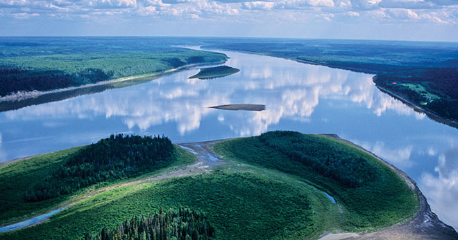
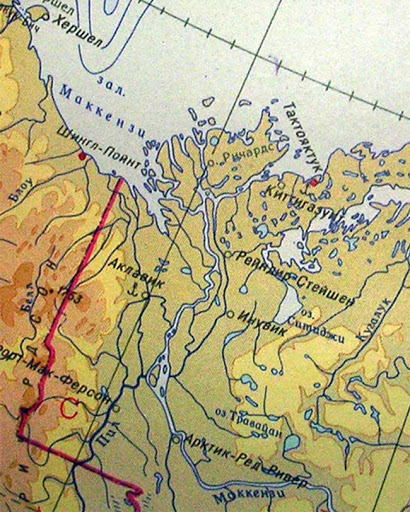

Маккензи
Главная страница
Маккензи — крупнейшая река Канады и всего американского севера протяжённостью 1738 км. Названа в честь открывшего её Александра Маккензи. Является судоходной рекой, длина судоходных путей всей речной системы Маккензи 2200 км — от Уотеруэйса на реке Атабаска до порта Тактояктук на побережье Северного Ледовитого океана. Наиболее крупные населённые пункты: Аклавик, Инувик, Тулита (Форт-Норман), Форт-Провиденс и нефтепромысловый центр Норман-Уэлс.
Река Маккензи вытекает из Большого Невольничьего озера в его западной части, возле населённого пункта Форт-Провиденс на высоте 512 фута (156 м) над уровнем моря. В истоке ширина реки составляет около 825 м. Важными истоками её вод Канадская энциклопедия называет реки Пис и Атабаску. Река Пис, в свою очередь, берёт воду из реки Финлей через водохранилище Уиллистон.
Под территорией всей низменности Маккензи к северу от Большого Невольничьего озера залегает вечная мерзлота. Долина реки сильно заболочена, покрыта еловым лесом. В центральной и южной части бассейна Маккензи преобладает ель сизая, местами как единственный вид деревьев, а в других местах перемежаемая сосной Банкса, сосной скрученной, тополем осинообразным и бальзамическим. Часто, но не регулярно встречается берёза бумажная.
Длинна: 1738 км
Площадь: 1 805 тыс. км²
Расход воды: 9700 м³/сек

МАККЕНЗИ НА КАРТЕ